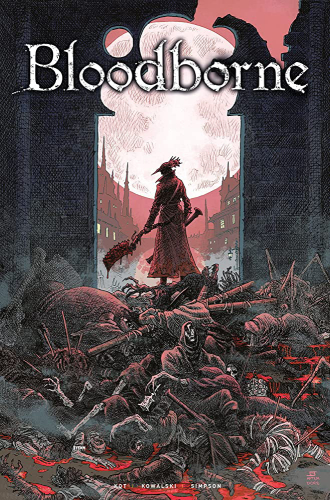

Bloodborne
"Bloodborne" é um jogo de ação e RPG desenvolvido pela FromSoftware e lançado em 2015 exclusivamente para o console PlayStation 4. O jogo é conhecido por sua atmosfera sombria e opressiva, combate desafiador e uma narrativa obscura e intrigante.
A jogabilidade de "Bloodborne" é intensa e recompensadora, com foco no combate rápido e agressivo. Os jogadores utilizam armas de fogo e armas brancas, como espadas e machados, para enfrentar inimigos desafiadores e chefes poderosos. O jogo incentiva uma abordagem ofensiva, onde o jogador precisa ser ágil e preciso para evitar ataques inimigos e encontrar oportunidades para contra-atacar.
